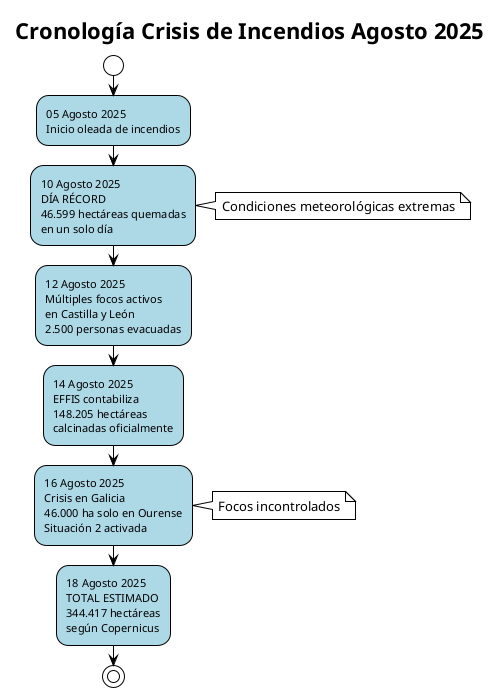
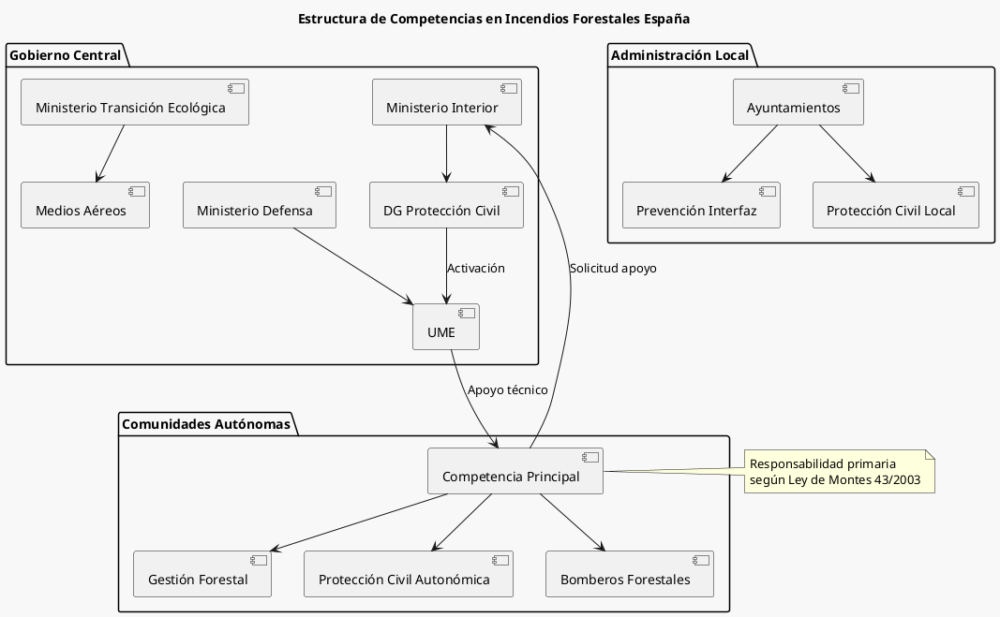
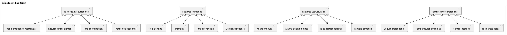
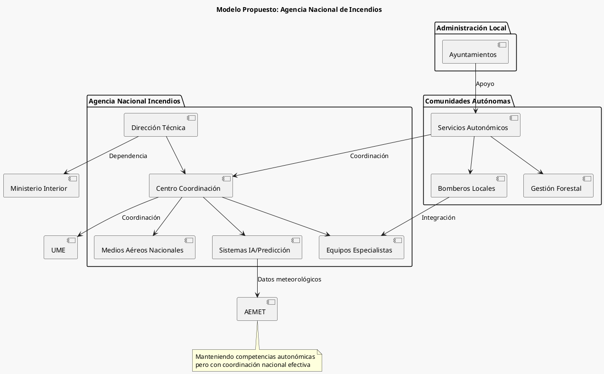

Crisis de Incendios Forestales en España - Agosto 2025: Análisis Crítico y Evaluación Institucional
Crisis de Incendios Forestales en España - Agosto 2025: Análisis Crítico y Evaluación Institucional
España ha vivido en agosto de 2025 una de las crisis de incendios forestales más devastadoras de su historia reciente. Hasta el 12 de agosto, los últimos datos disponibles en el Sistema Europeo de Información sobre Incendios Forestales (EFFIS), creado por la Comisión Europea, el fuego ha devastado ya 144.083 hectáreas en lo que va de 2025, con estimaciones más recientes que elevan la cifra a más de 344.000 hectáreas según Copernicus.

Cifras Clave
| Concepto | Valor | Fuente |
|---|---|---|
| Hectáreas quemadas (EFFIS 12 ago) | 144.083 ha | EFFIS/CE |
| Hectáreas estimadas (18 ago) | 344.417 ha | Copernicus |
| Día récord (10 agosto) | 46.599 ha | Newtral |
| Galicia (solo Ourense) | >46.000 ha | Xunta |
| Personas desalojadas | >9.000 | Varios medios |
Análisis por Comunidades Autónomas
Galicia: El Epicentro de la Crisis
Galicia se ha convertido en el foco principal de la crisis. Galicia lleva más de una semana sufriendo una oleada de incendios sin control que calcina más de 51.220 hectáreas, la mayoría en la provincia de Ourense que mantiene vigente la Situación 2.
Evaluación Crítica - Galicia
- Errores Identificados:
- Aparente insuficiencia de medios iniciales
- Posible retraso en la activación de protocolos de máxima emergencia
- Falta de coordinación en las primeras horas críticas
- Aciertos:
- Activación rápida del Plan de Emergencias de Galicia
- Coordinación efectiva para evacuaciones masivas
- Solicitud temprana de apoyo estatal
Castilla y León: Crisis Múltiple
La región experimentó múltiples focos simultáneos con más de 2.500 personas desalojadas, poniendo a prueba su capacidad de respuesta distribuida.
Madrid: Impacto Urbano-Rural
El 11 de agosto, un incendio cerca a Tres Cantos (Madrid) se propagó con rapidez debido a una tormenta seca y fuertes vientos, arrasó 1 500 hectáreas de campo, obligó a evacuar urbanizaciones, provocó la muerte de un hombre con quemaduras en el 98 % de su cuerpo y dejó otro herido.
Análisis Crítico Madrid:
- Error grave: Insuficiente preparación para incendios en interfaz urbano-forestal
- Consecuencia trágica: Víctimas mortales evitables con mejor protocolo de evacuación
- Acierto: Respuesta rápida de servicios de emergencia una vez activados
Marco Competencial y Respuesta Institucional

## Marco Legal y Competencial
La lucha contra los incendios forestales en España no la gestiona un solo organismo central, sino que es una responsabilidad que recae principalmente en cada Comunidad Autónoma. La Constitución Española lo permite, y la Ley de Montes (Ley 43/2003) lo establece claramente.
### Evaluación del Reparto Competencial
#### Fortalezas del Sistema:
- Conocimiento local del territorio
- Especialización regional
- Capacidad de respuesta adaptada
#### Debilidades Evidenciadas:
- Fragmentación de recursos
- Descoordinación interautonómica
- Disparidad en capacidades técnicas
Análisis de la Respuesta del Gobierno Central
## Actuación del Ministerio del Interior
La Dirección General de Protección Civil y Emergencias está en comunicación constante con la Dirección General de Protección Civil y Operaciones de Ayuda Humanitaria Europeas (ECHO) por si fuera necesaria la activación de medios europeos a través del Mecanismo de Protección Civil de la UE.
## Posición Gubernamental
La ministra ha asegurado que el Gobierno ha respondido a todas las solicitudes de medios realizadas por las comunidades autónomas.
### Evaluación Crítica - Gobierno Central
#### Aciertos:
- Respuesta a solicitudes de apoyo
- Activación proactiva de protocolos europeos
- Despliegue de la UME según demanda
#### Errores y Omisiones:
- Falta de liderazgo proactivo en crisis nacional
- Ausencia de protocolo de emergencia nacional automática
- Comunicación reactiva vs. proactiva
Crítica a la Oposición Política
## Posición del Partido Popular
El líder del PP descarga el peso de sus barones y afirma que, aunque las competencias en materia de extinción recaen en las comunidades, la voracidad de las llamas exige una implicación más intensa del Estado.
### Análisis Crítico - Oposición
#### Contradicciones Evidentes: La competencia en materia de extinción corresponde a las comunidades autónomas en virtud de sus atribuciones en materia de protección civil y gestión forestal, pero el PP reclama mayor intervención estatal cuando gobierna estas mismas comunidades.
#### Incoherencia Política:
- Madrid (PP): Crisis con víctimas mortales, pero culpabiliza al gobierno central
- Galicia (PP): Solicita más medios tras años de recortes propios
- Castilla y León (PP): Demanda recursos sin reconocer responsabilidad autonómica
Factores Agravantes y Causas Estructurales

## Negligencias Documentadas
### Caso Oímbra (Ourense) Se ha detenido al presunto autor del incendio de Oímbra, que ha arrasado más de 5.000 hectáreas, evidenciando la dimensión criminal de algunos siniestros.
### Factores Meteorológicos Extremos El domingo 10 de agosto en España se registró el récord de superficie calcinada en 2025: 46.599 hectáreas solo en un día, coincidiendo con condiciones meteorológicas excepcionales.
Evaluación de Ganadores y Perdedores
## Ganadores (Relativos)
| Actor | Razón |
|---|---|
| UME | Demostró efectividad y profesionalidad |
| Servicios Emergencias | Evitaron mayor número de víctimas |
| Medios Comunicación | Cobertura informativa de calidad |
| Ciudadanía | Solidaridad y comportamiento ejemplar |
## Perdedores
| Actor | Motivo del Fracaso |
|---|---|
| Galicia (Xunta) | Crisis de gestión forestal evidente |
| Madrid (CAM) | Víctimas mortales evitables |
| Castilla y León | Múltiples focos simultáneos descontrolados |
| Sistema Competencial | Fragmentación contraproducente |
| Clase Política | Politización de la crisis |
Propuestas de Mejora Estructural
## Reformas Urgentes Necesarias
### 1. Marco Competencial
- Creación de Agencia Nacional de Incendios: Coordinación supraautonómica
- Protocolos automáticos: Activación sin solicitud previa en emergencias
- Recursos compartidos: Pool nacional de medios especializados
### 2. Inversión y Tecnología
- Sistemas de alerta temprana: Red nacional integrada
- Flota aérea ampliada: Incremento del 50% en capacidad
- Inteligencia artificial: Predicción de riesgo y comportamiento del fuego
### 3. Prevención y Gestión Forestal
- Plan Nacional de Gestión: Coordinado y científicamente fundamentado
- Incentivos rurales: Repoblación y mantenimiento territorial
- Silvicultura preventiva: Gestión activa de combustible forestal

## Opciones Futuras y Escenarios
### Escenario A: Status Quo Mejorado
- Mejoras incrementales en coordinación
- Inversión moderada en recursos
- Riesgo: Repetición de crisis similares
### Escenario B: Reforma Competencial Profunda
- Agencia nacional de incendios
- Recentralización parcial
- Ventaja: Respuesta coordinada y eficaz
### Escenario C: Federalización del Sistema
- Modelo similar al de otros países federales
- Especialización y subsidiariedad
- Complejidad: Reforma constitucional necesaria
Conclusiones y Recomendaciones
## Conclusiones Principales
- Crisis Multisistémica: No solo meteorológica, sino de gestión institucional
- Fragmentación Contraproducente: El modelo competencial actual es inadecuado para crisis de esta magnitud
- Politización Perjudicial: El debate partidista ha dificultado la respuesta efectiva
- Necesidad de Reforma: Cambios estructurales urgentes e ineludibles
## Recomendaciones Inmediatas
### Corto Plazo (2025-2026)
- Evaluación independiente de la crisis
- Plan de inversión extraordinaria
- Protocolos de coordinación mejorados
### Medio Plazo (2026-2028)
- Creación de la Agencia Nacional de Incendios
- Reforma del marco legal
- Inversión en tecnología y prevención
### Largo Plazo (2028-2035)
- Transformación del modelo forestal nacional
- Adaptación al cambio climático
- Construcción de resiliencia territorial
## Reflexión Final
La crisis de agosto de 2025 representa un punto de inflexión para España. Ya son 344.417 las hectáreas quemadas por los incendios, según estimaciones de Copernicus, una cifra que debería generar una reflexión profunda sobre nuestro modelo de gestión del territorio y de las emergencias.
La respuesta no puede limitarse a inversiones adicionales o ajustes menores. Se requiere una transformación del sistema que preserve las ventajas de la descentralización autonómica pero que incorpore mecanismos de coordinación, recursos compartidos y respuesta nacional para emergencias de esta magnitud.
El futuro de nuestros bosques, y en última instancia de nuestro territorio, depende de la capacidad de aprender de esta crisis y implementar cambios estructurales que nos preparen para los desafíos del cambio climático y la intensificación de fenómenos extremos.
Referencias Documentales
- Sistema Europeo de Información sobre Incendios Forestales (EFFIS) - Comisión Europea
- Copernicus - Servicio de Monitoreo de la Atmósfera
- Ley 43/2003 de Montes
- Informes de medios: Infobae, El Español, El Independiente, Nueva Tribuna
- Fuentes oficiales: La Moncloa, Xunta de Galicia, Comunidad de Madrid
—